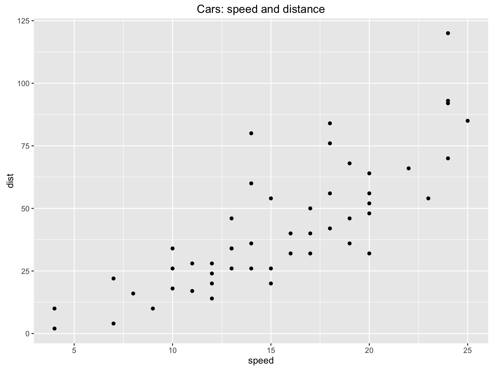
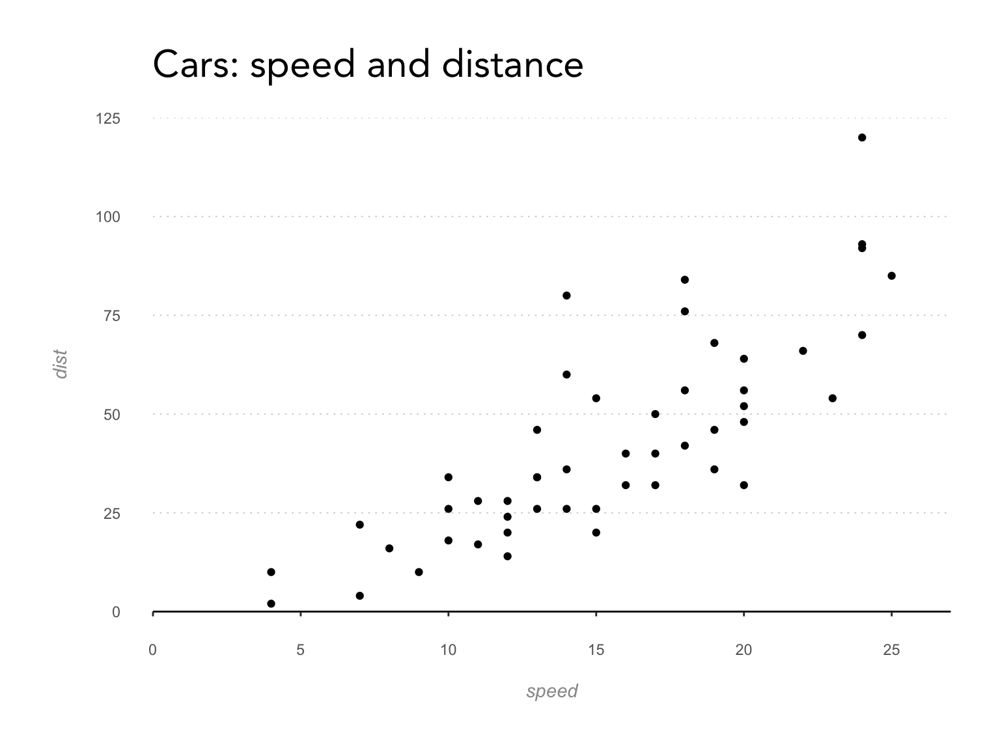
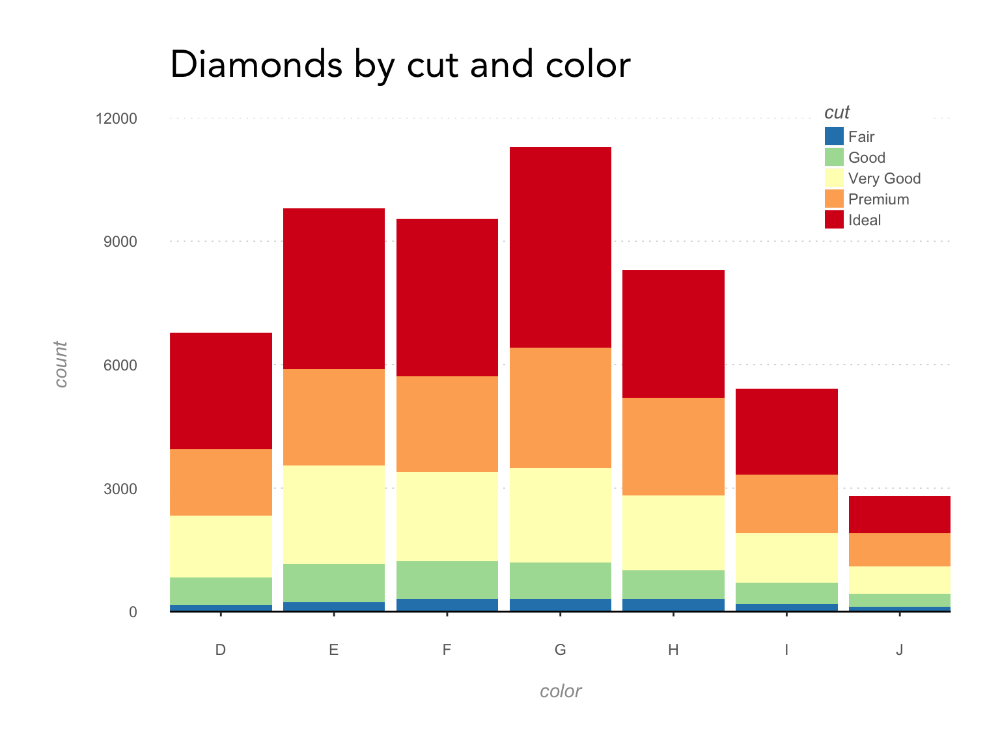
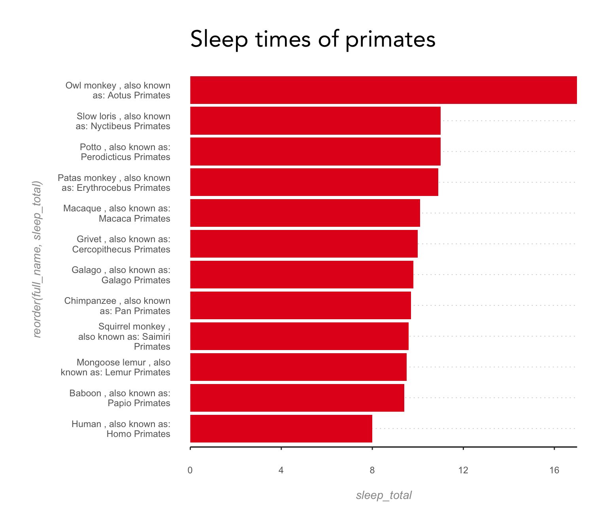

ggplot2 starters
Dumky de Wilde
This document is an attempt to set up some basic graph elements for ggplot2 that can be copied and pasted easily when creating new plots and graphs.
Let’s start with the basics:
#libraries:
library("ggplot2")
library("RColorBrewer")
library("stringr")
library("tidyr")
library("reshape2")
p <- ggplot(cars, aes(speed, dist)) +
geom_point() +
ggtitle("Cars: speed and distance")
p #And plot it
Background and axes
Now let’s make it a little nicer and set up the background and axes
bg_and_axes <- theme(
panel.background = element_rect(fill = NA),
panel.grid.major.y = element_line(colour = "#cccccc", size = 0.3, linetype = "dotted"),
panel.grid.major.x = element_blank(),
axis.ticks.y = element_blank(),
axis.line.x = element_line(color = "black", size = 0.5),
axis.text = element_text(colour = "#666666"),
axis.title = element_text(colour = "#999999", face = "italic"),
axis.text.x = element_text(margin = margin(16,0,12,0)),
axis.text.y = element_text(margin = margin(0,16,0,12)),
plot.title = element_text(family = "Avenir", size = rel(2),
margin = margin(0,6,24,6), hjust = 0),
plot.margin = unit(c(1,1,1,1), "cm"))
p + bg_and_axes
Scales
Set the scales properly:
p2 <- p + bg_and_axes +
scale_y_continuous(limits = c(0,125), breaks = seq(0,125,25), expand = c(0,0)) +
scale_x_continuous(limits = c(0,27), breaks = seq(0,25,5), expand = c(0,0))
p2 #And plot our new graph
Bars and colors
Now to some bar charts and colors. I like the spectral color set because it is easy to tell the colors apart, and works for the color blind too, but it still has the feeling of matching colors.
p3 <- ggplot(data = diamonds, aes(color, ..count.., fill=cut)) +
geom_bar() +
bg_and_axes +
scale_y_continuous(limits = c(0,12000), expand = c(0,0)) +
scale_x_discrete(expand = c(0,0)) +
ggtitle("Diamonds by cut and color")
legend_opts <- theme(
legend.text = element_text(color = "#666666"),
legend.title = element_text(color = "#666666", face = "italic"),
legend.direction = "vertical",
legend.position = c(0.9,0.9),
legend.key.size = unit(12, "pt")
)
p3 +
legend_opts +
scale_fill_brewer(palette = "Spectral", direction = -1)
Now let’s go from stacked bars to non-stacked, and flip ’m over, because I always favor horizontal bars instead of vertical. It makes for easier comparison, especially for longer lists, and improves readability of the label text. Let’s take a different data set and you’ll see what I mean.
#Make sure we have some long label names so you'll see how they wrap.
msleep["full_name"] <- paste(msleep$name, ", also known as: ",
msleep$genus, msleep$order, sep = " ")
#now for the plot.
p4 <- ggplot(msleep[msleep$order == "Primates",], aes(reorder(full_name, sleep_total), sleep_total)) +
geom_bar(stat="identity", fill=brewer.pal(3, "Set1")[1]) +
scale_x_discrete(labels = function(x) str_wrap(x, width = 25)) +
scale_y_continuous(expand = c(0,0)) +
coord_flip()
p4 +
bg_and_axes +
ggtitle("Sleep times of primates")